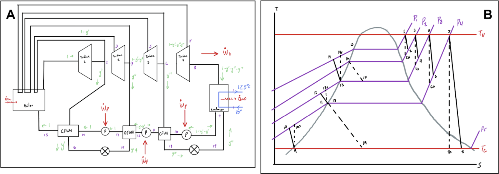
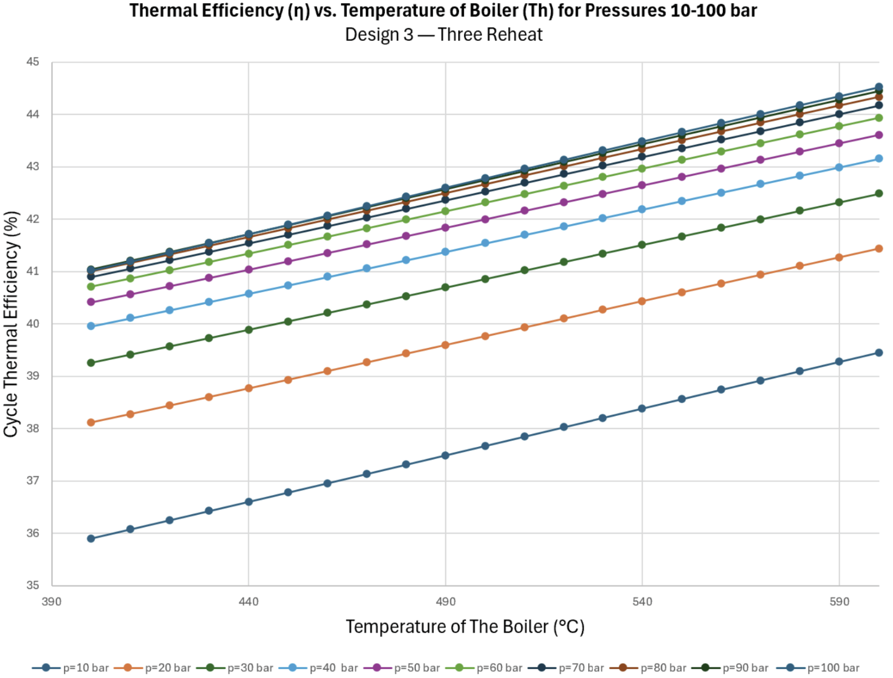

Nuclear Power Plant Design & Simulation
HomeThis Nuclear Power Plant design that we have created takes into account three different design iterations, that are included below:
Design 1: Standard No Reheat Stages Rankine Cycle
Design 2: Rankine Cycle With One Reheat Stage
Design 3: Rankine Cycle With Three Reheat Stages
The final design was selected as it was returned the highest efficiency and least amount of emissions. The analytical data can be visualized in the graph below:
